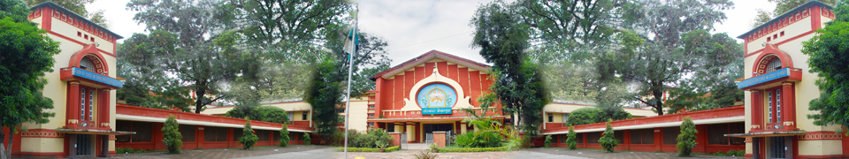

Government M.H College of Home Science & Science for Women,Autonomous,Jabalpur,M.P.
Naac Reaccredited 2019 :B+Grade
- Home
- About College
- Campus
- Admission
- Library
- Department
- Science
- Botony
* - Chemistry
- Mathematics
- Physics
- Zoology
- Home Science
- Clothing and Textile
- Food and Nutrition
- Human Development
- Resource Management
- Vocational Cources
- Biochemisty
- Biotechnology
- Clinical Nutration and dietetics
- Computer Science & Application
- Computer Maintenance
- Electronics
- Microbiology
- Language
- Examination
- Examination Info
- Semester
- RTI
- Photo Gallery
- Contact Us
Department of Botony
HISTORY OF THE DEPARTMENT The department of Botany was established in 1958. Post-graduation in Botany was started in 1971, with specialization in Plant-Pathology. In 1990, two more specializations i.e. Microbiology & Phycology were added. At undergraduate level Microbiology was initially started in combination with Chemistry & Zoology under self-financing scheme in1999. This combination was later changed to Chemistry; Microbiology and Botany. The department is running post graduation course in Microbiology since 2002. 3-months certificate course on instrumentation and Bonsai.
Names of Heads :
| 1. |
Dr. S. Mittal |
1958 - 1962 (Head Deptt. of Biology) |
| 2. |
Dr. S.Gupta |
1962 - 1964 (Head Deptt. of Biology) |
| 3. |
Dr. A.P. Shukla |
1964-1965 |
| 4. |
Dr. S.Gupta |
1965-1968 |
| 5. |
Dr. S.N. Awasthi |
1968-1971 |
| 6. |
Dr. S.Gupta |
1971-1972 |
| 7. |
Dr. H.N. Tiwari |
1973-1975 |
| 8. |
Dr. N. Sen |
1975-1992 |
| 9. |
Dr. R. Shukla |
1992-2000 |
| 10. |
Dr. A. Newsarkar |
2000-2001 |
| 11. |
Dr. R.Shukla |
2001-2002 |
| 12. |
Dr.A. Dubey |
2002-2007 |
| 13. |
Dr.K. Agrawal |
2007-2009 |
| 14. |
Dr.Shashi Tiwari |
2009-2010 |
| 13. |
Dr.K. Agrawal |
2007-2009 |
| 14. |
Dr.Shashi Tiwari |
2009-2010 |
| 13. |
Dr.K. Agrawal |
2007-2009 |
| 14. |
Dr.Shashi Tiwari |
2009-2010 |
| 15. |
Dr.Neelima Raipuria |
2011-2015 |
| 14. |
Dr.Sheela Vishwakarma |
2015-2017 |
| 17. |
Dr.Akhilesh Ayachi |
2017-till date |
Self – Finance Subject Run By The Depaetment:
BSc - Chemistry, Microbiology, Botany
MSc - Microbiology
Infrastructure
LABORATORIES :
Undergraduate Laboratories : Botany-02, Microbiology-02
Postgraduate Laboratories : Botany-02, Microbiology-02
LIBRARY : Department has separate library for Botany & Microbiology, with sufficient number of books for P G students. The books are well classified under different heads such as – General Botany, Microbiology, Cytology, Physiology, Taxonomy, Genetics, Ecology, Plant Pathology etc.
| SR.No. |
PARTICULARS |
QUANTITY |
| 1. |
Total No. of UGC Books |
448 |
| 2. |
Books (General Fund) |
1501 |
| 3. |
Journals |
05 |
MAJOR EQUIPMENT:
| SR.No. |
PARTICULARS |
QUANTITY |
| 1. | Camera Lucida
03 |
| 2. |
pH meter |
02 |
| 3. |
Colony Counter |
02 |
| 4. |
Olympus Research Binocular Microscopes |
02 |
| 5. |
B.O.D Incubator |
02 |
| 6. |
Centrifuge |
02 |
| 7. |
Laminar Air Flow |
02 |
| 8. |
Stereoscopic Microscope |
01 |
| 9. |
Micro scope |
50 |
| 10. |
Oven |
06 |
| 11. |
Incubator |
03 |
| 12. |
Laptop |
01 |
| 13. |
LCD |
01 |
| 14. |
Mixer Grinder |
01 |
| 15. |
OHP |
03 |
| 16. |
Micro Wave |
01 |
| 17. |
Electro Phoresis Kit |
01 |
| 18. |
Spectro Photometer |
01 |
COURSE COMBINATIONS WITH BOTANY
UNDERGRADUATE LEVEL
Chemistry, Botany, Zoology (CBZ)
Chemistry, Microbiology, Botany (CMBB)
Chemistry, Biotechnology, Botany (CBTB)
POSTGRADUATE LEVEL
Botany
Microbiology
The curriculum is
Recommended by Central Board of Studies and approved by HE the Governor of M.P.
Board of studies of the Department
RESEARCH ACTIVITIES:
One Research Project by MPCOST was completed in July 2009
One Minor Research Project by UGC is under process
One Minor Research Project by UGC was completed by
Dr. Anuradha Dave in 2015-2017
National Workshop on Mushroom Cultivation 2016-17
National Seminar on "Environmental Conservation issues and strategies" March 2017-18
National Workshop on "Vigyan Lok Vyapikaran" organized by Jigyasa 2018
Well equiped Research Lab
Faculty members awarded Ph.D. Degree:
Dr. Manjula Pathak - 2004
Dr. Anuradha Dave - 2005
The faculty members awarded PhD:
Dr.(Smt.) Sulekha Pathak
Dr.(Smt.) Rajni Nigam
Dr.(Smt.) Vijaya Shrivastava Kaushal
Dr.(Smt.) Rachna Pandey
Dr. A K Ayachi Registered as guide for Ph-D in Botany & Microbiology:
Registered candidates : 03
Awarded candidates : 07
Alotted for Ph-D : 02
Book published on "Credibility of folk Claims of Manipur and Nagaland" ISBN No.978-90-85304-99-6, Authors- Dr. A K Ayachi & Dr. Aparna Awasthi
ACTIVITY GROUPS :
Sir Jagdish Chandra Basu activity club performs various activities throughout the year.
One-day workshop on Bonsai Preparation.
Workshop on Mushroom cultivation.
Workshop on Microscope maintenance
State level Environmental Awareness Examination was conducted.
Guest lectures on special topics by eminent persons.
Antony vam Leeuwenhoek Club performes activities throught the year
DEPARTMENTAL MAGAZINE :
Annual departmental magazine titled “HARITIMA” and "Microbial World" is being published with the contribution of students, staff & other persons from various institutes.
EXCURSION / EDUCATIONAL TOURS / VISITS –
Regular visits to S.F.R.I., T.F.R.I., and J.N.K.V.V. Jabalpur, and outstation trips are organized every year to places like Fossil Park (Ghughwa), Amarkantak & Pachmadi .
Industrial Visit coca colafactory (24 march 2018) and sanchi milk factory (23 jan 2013)
Institutianal visit RDVV (09 sep 2017)
GOLD MEDAL :
Gold Medals sponsored by the Faculty
Topper of MSc Microbiology : sponsored by Dr. Rani Shukla Retd. Professor
Topper of MSc Botany : sponsored by Dr. Asha Dubey Retd. Professor
Highest Marks in Botany BSc CBZ Group sponsored by Dr. Vijiya Shrivastava Retd. Professor
LIST OF STAFF MEMBERS :
Dr. A.K. Ayachi Professor & Head
Dr. S. Vishwakrama Professor
Dr. A. Dave Professor
Dr. S. Pathak Associate Professor
Mrs. R. Nigam Associate Professor
Mrs. V. Shrivastava Associate Professor
Mrs. R. Pandey Associate Professor
Dr. Priyanka Raj Asstt. Professor
LIST OF CLASS III AND IV :
Lab Technician - Mr. Rajneesh Jain
Lab Attendant - Mr. Purushottam Sen
Lab Attendent - Mr. Vishal Gond
Photos